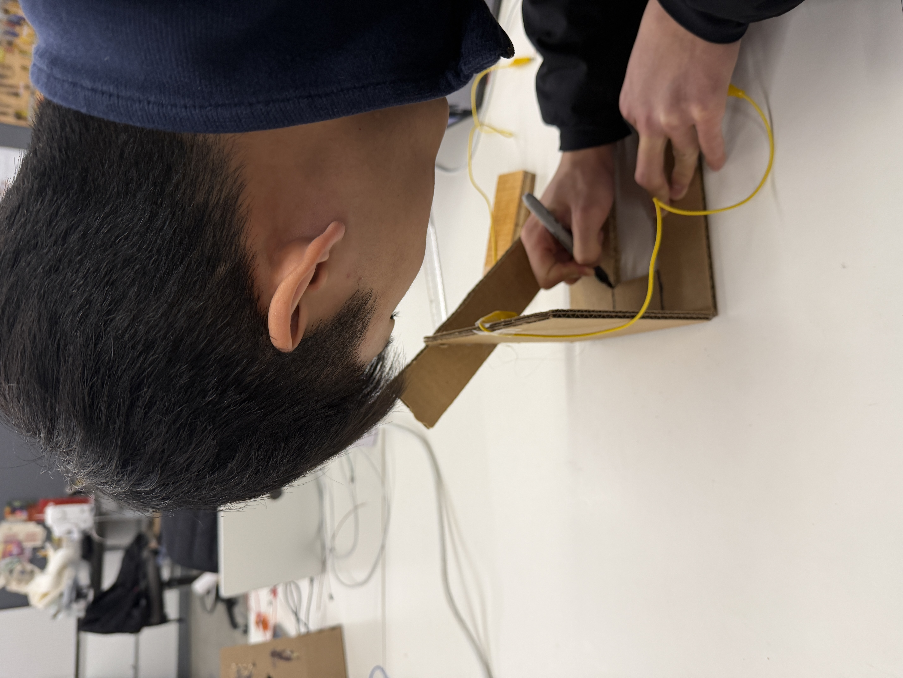
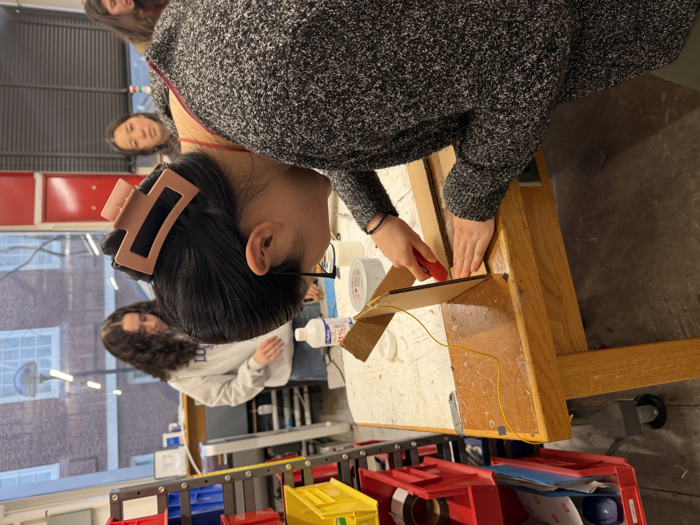
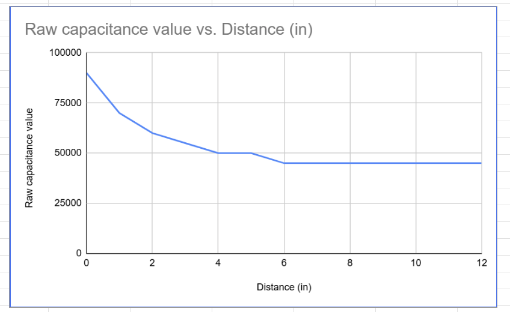
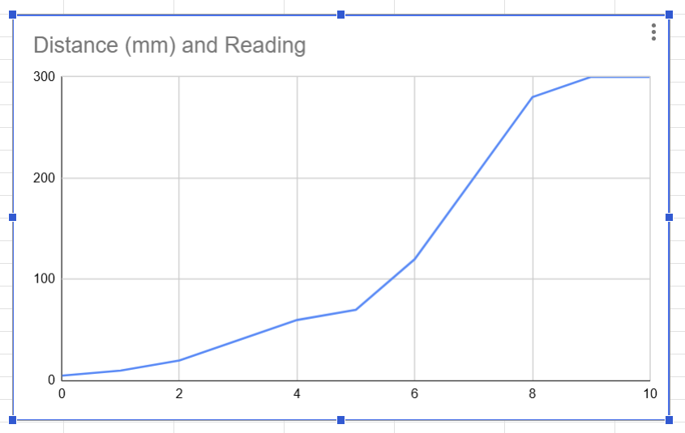

Week 6: Electronic Inputs
Assignment 1: Capactive Sensor
For this assignment, I constructed a distance capacitive sensor with Will, Matthew, and Aurora in class. We used two pieces of coppoer foil connected to an ESP32 Xiao and attached to a wooden block and a simple track with a ruler stuck on it as our sensor. Here a few pictures of the construction process and our final sensor:



We then calibrated the sensor by taking measurements of the raw capacitance values at different distances and plotting them to find a function that would convert raw capacitance values to distance. We found that the relationship was not linear, and instead followed a more exponential looking decay curve before plateauing at a certain distance.

Assignment 2: [Use + Calibrate Another Sensor]
For this assignment, I decided to use a hall effect sensor and try to see calibrate it with respect to distance. For calibration, we stuck a magnet on a caliper and moved it to different distances from the hall effect sensor, taking measurements of the raw sensor values at each distance. We found that the relationship between distance and raw sensor value was also non-linear, especially in the middle of the range of the sensor, before plateauing at the maximum measurable distance of around 9 mm. Here's the calibration curve we got from our measurements:

I also used the hall effect sensor (ignore the fact that it's in a tube) to trigger an LED when a magnet was close enough to it, which was a lot of fun to see in action! Here's a video of that working: